Hrvoje, Krešo, Miro, Dinko, Sunčica. Bok. Je, je. Pogađaš, u Zagrebu smo. Naše prvo devojačko putovanje, ok malo smo starije, može da počne. Naši neverovatno ljubazni domaćini, Jacini prijatelji sa ostrva Krapnja, čine nam ovaj boravak nezaboravnim. Neviđeni džentlmeni. Utrkuju se da nam pokažu više, bolje. "Sad ćemo ih voditi onamo. Pa idemo ovamo." A mi se prepustile, pa kao pačići za njima.
Zagreb, dan prvi
Grad salonskih stanova i tramvaja. Grad kulturnih ljudi. Lepe muzike. Adventa. Al' da krenemo iz početka. Svjetlana je imala sjajnu ideju: "Ajmo u Zagreb na Advent! Najbolji advent već par godina za redom." Ponuda je, naravno, oberučke prihvaćena. I tako Jaca, Nela, Svjetlana i Sandra kreću na put.
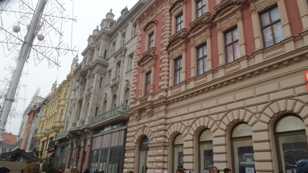Najzad stiže i taj dugo čekani dan. Krećemo preko Fruške gore. Ups, na njoj sneg. Posle periodično magla i čisto nebo.
Stigosmo. Prvi utisak je da liči na Novi Beograd. Stigle u centar. Druga priča. Široke ulice. Austrougarske zgrade. Lepe fasade. Čiste. Nisu crne od smoga kao u Beogradu. Salonski stanovi. Visoki plafoni. Naša zgrada lepa. Imale sreće da smo našle parking u blizini.
Ukucavamo lozinku i ulazimo. Prolazimo. Izlazimo iz zgrade. Dvorište. Nova zgrada. Kao iz Zone sumraka. Pogotovo noću. Ona prva kroz koju smo prošle ovde od nazad ima šarm rasturenih zgrada sa Sicilije.
Ulazimo u ulaz. Treći sprat bez lifta. Najmanja žena, Nela, sa najvećim koferom. Puf, puf, stigle gore. Na drugom spratu stolica sa jastukom i mačak. Opet lozinka, ovaj put za kutijicu sa ključem. Uz malo napora uđosmo.
Naša kućica slatka. Udobna. Pojele Neline kiflice, one popile kafu i hajmo u život.
Dugački bulevari. Sve okićeno, svetluca. Tezgice. Hrana. Piće. Muzika. Svirke. Žurka. Naišle smo na trojicu što sviraju saksofon. Baš su dobro svirali. Tu su nam se pridružili i Siniša, Hrvoje i Miro. Đuskali smo na ulici. Toliko su mi se dopali muzičari da sam kupila CD. Slušaćemo ga u kolima u povratku. Pili su kuvano vino, a ja, naravno, čaj.
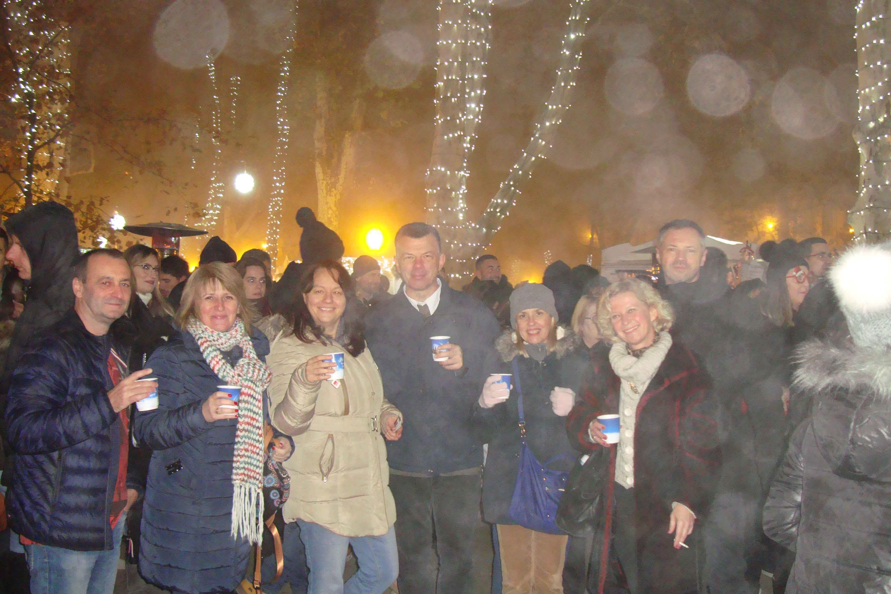Proveli su nas po raznim trgovima. Svuda ekstra muzika. Ex-Yu rock. Božićna atmosfera. Sve okićeno. Gde god se okrenemo, neki lep detalj za slikanje. Maskota im je Krcko Oraščić i ima ga na svakom koraku. Gužva. Puno sveta. Puno ih i đuska. Ima i mladih i penzionera. Svi ljubazni i kulturni.
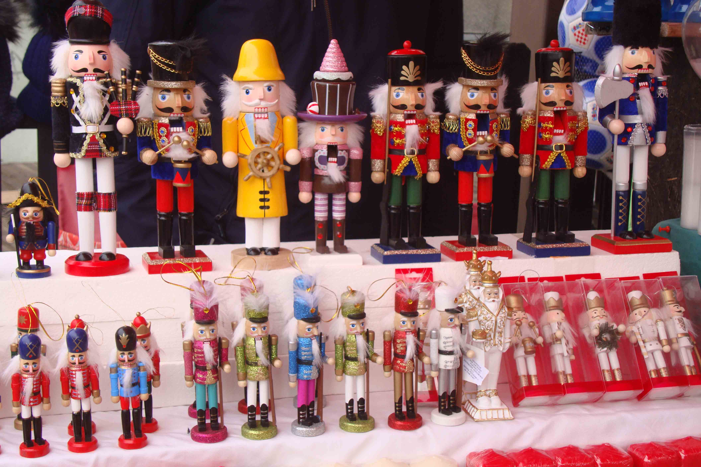 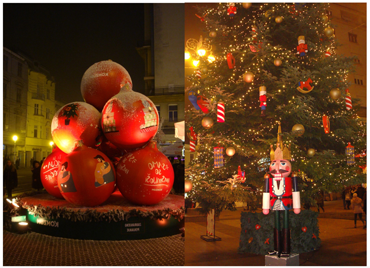Jeli smo fritule. Kao male krofne su, prelivene vanilom, čokoladom i šumskim voćem. Vodili su nas na Gornji grad. Postoji uspinjača, ali smo išli peške drvenim stepenicama. Gornji grad podseća na Petrovaradin. I tamo žurka. Okićeno. Tu su uglavnom mlađi.
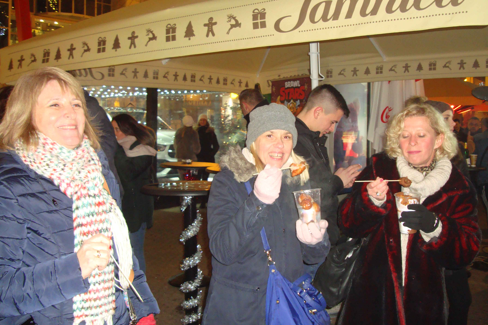 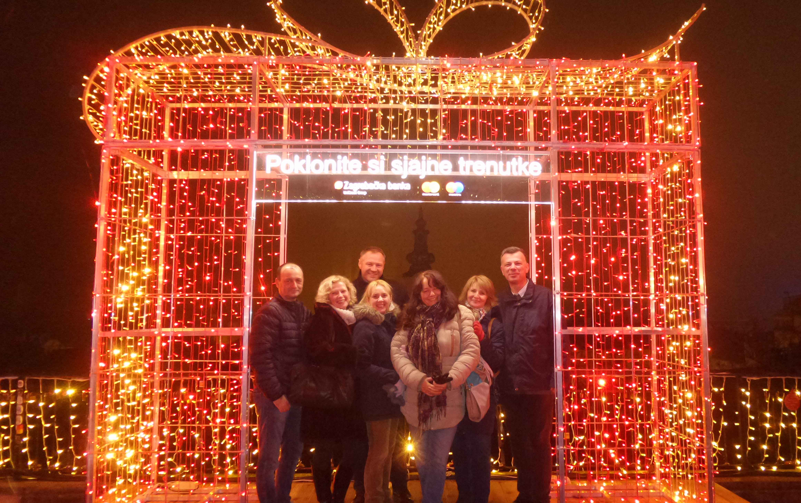Komentari: „Dobro došli u Zagreb, uživajte.” Tezgice. I drveće okićeno raznim ukrasima. Štrosmajerovo šetalište. Lepi izlozi. Tu je već počelo dejstvo vina, pa se orio smeh.
Ušli smo u kafić da se zgrejemo. Tražila sam čaj od nane. Konobarica mi je rekla da nema. Preveli su joj da je to menta. Ona se tako slatko nasmejala i rekla da je razumela: od nara. Tu smo se fino zgrejali. U momentu smo kliknuli i bili klapa. Puno smo se smejali. Našoj kućici smo stigli u pola dva.
Zagreb, dan drugi
Dan je počeo odlično, a tako se i nastavio. Naišle smo na pekaru sa predivnom hranom.
Nadoručkovale smo se i krenule u avanturu. Svuda muzika. Uglavnom božićna. Pesma me baš ponela i razigrala sam se. Na ulici. Jedna žena stala, gleda me i smeši mi se. Drugi čovek uz osmeh komentariše: „Vama život lep.”
I po danu je bilo lepo obilaziti tezge. Kupovina suvenira, ručno pravljenih čokolada. Obilazak pijace.
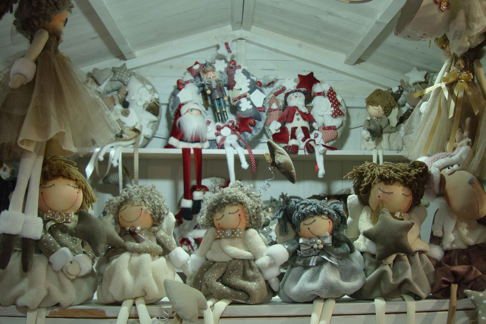Želja mi je bila da vidim katedralu. Ogromna je. Iz daljine nije izgledala tako velika. Od svetlog je kamena. Čista, blistava. Jedan vrh joj renoviraju. Čiste. Kažu da to traje 30 godina. Kad završe, vrate se na prvi vrh.
Ulaz je kičast, sa dosta figura ljudi. Podseća na Notr Dam. Unutra su redovi klupica. Lako je zamisliti svadbeni marš i venčanje. Gore su: orgulje, prozori, šareni vitraži, razne skulpture, ogromni kristalni lusteri, lepi svodovi. Ispovedaonice. Jedan zid ispisan glagoljicom. Ne znaš gde da gledaš. Čitaj: šta da slikaš.
Na ulici nas jedna devojka ubedila da uđemo u salon. One su odradile piling ruku sa solju iz... zaboravila sam kog mora, i sve smo namazale ruke kremom od maslaca. Meni se, za divno čudo, baš svideo miris jer mi obično sve ima prejak miris. Međutim, sve je to bilo preskupo i odosmo.
Srele smo se sa Sunčicom i Dinkom i otišle na kafu (Sandra čaj). Posle toga su nas preuzeli Hrvoje i Krešo i provodali nas svuda. Opet Gornji grad. Sada uspinjačom. Najkraća je na svetu. Samo par sekundi traje vožnja.
Jele smo pečene kobasice. Odlične. Debrecinke. Tanke, ukusne. Nela je jela šokačku kobasicu. Debelu. Jedva je zinula.
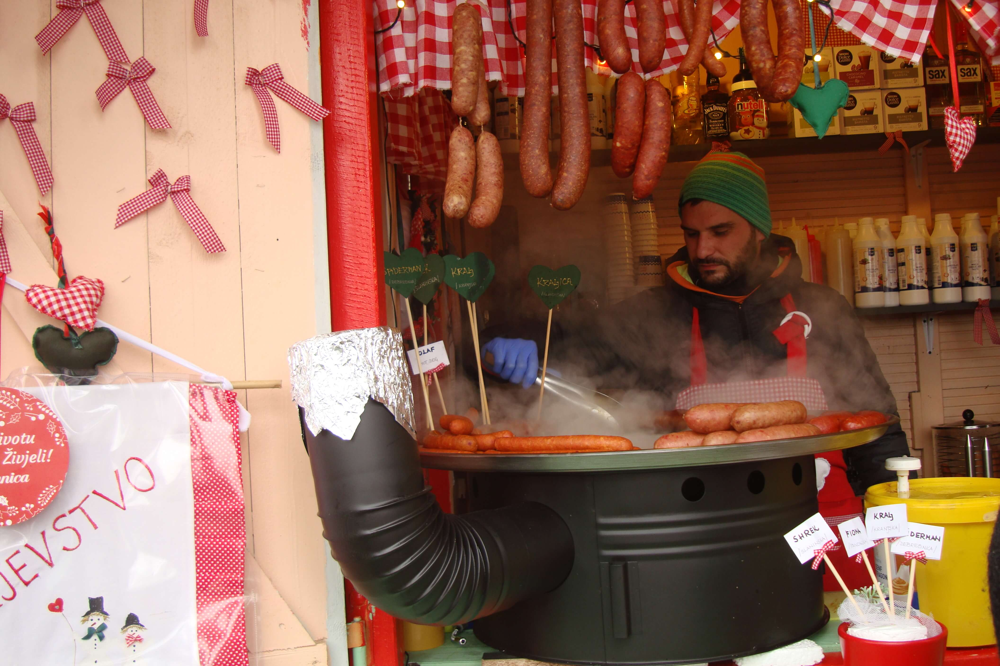 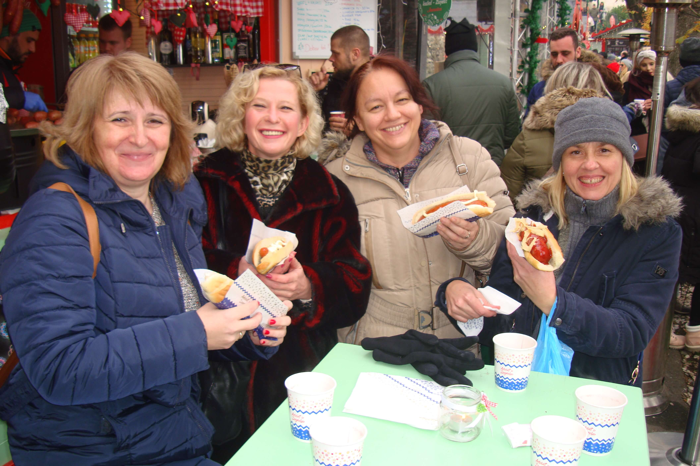Oni su zalili i rakijom, medicom. Posle aperitiva, su pili kuvano vino. Dobro je da im nije trebalo posle pridržavanje.
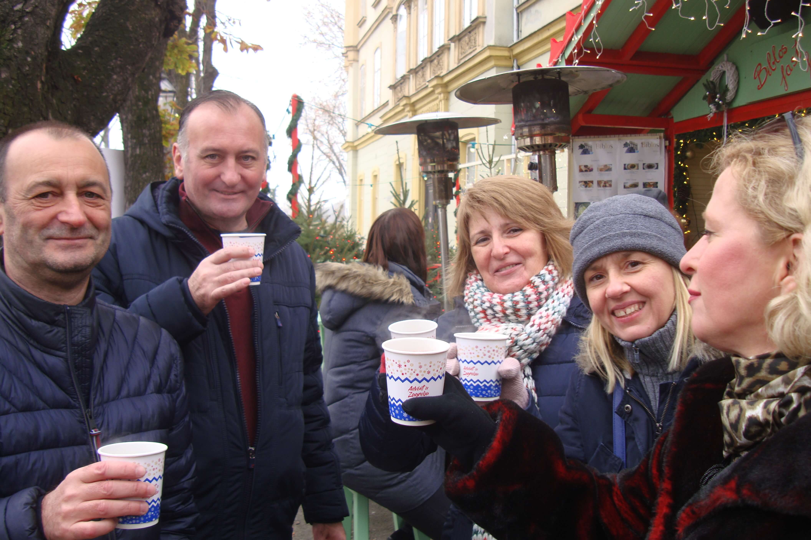Odveli su nas u jedan fantastičan tunel, prelepo okićen jelkama i ukrasima koji vise sa plafona. Zove se Grič. Krešo, nekadašnji i vodič, nam je demonstrirao svoje umeće, zabavljajući nas pričama o Zagrebu i spomenicima.
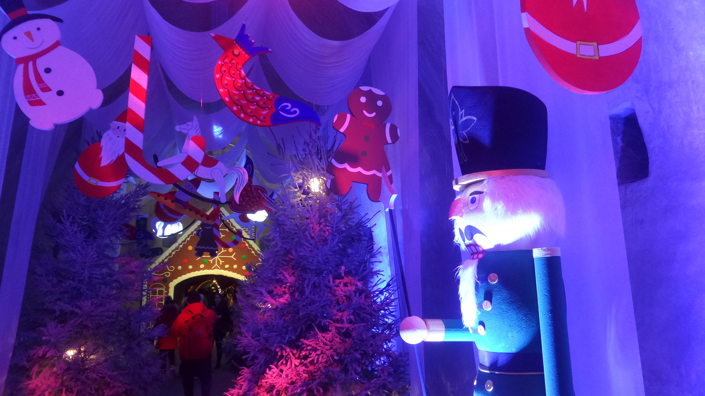Gde pokazuje ban Jelačić?
Najinteresantnija priča nam je bila da je ban Jelačić pokazivao sabljom na Ugarsku da ih tera. Neko vreme je bio nepodoban i sklonjen je. Kad su ga vraćali, bilo je pitanje gde da ga okrenu. Bio je uzdah olakšanja i smeh kad smo otkrili da nije na Srbiju već na Dalmaciju.
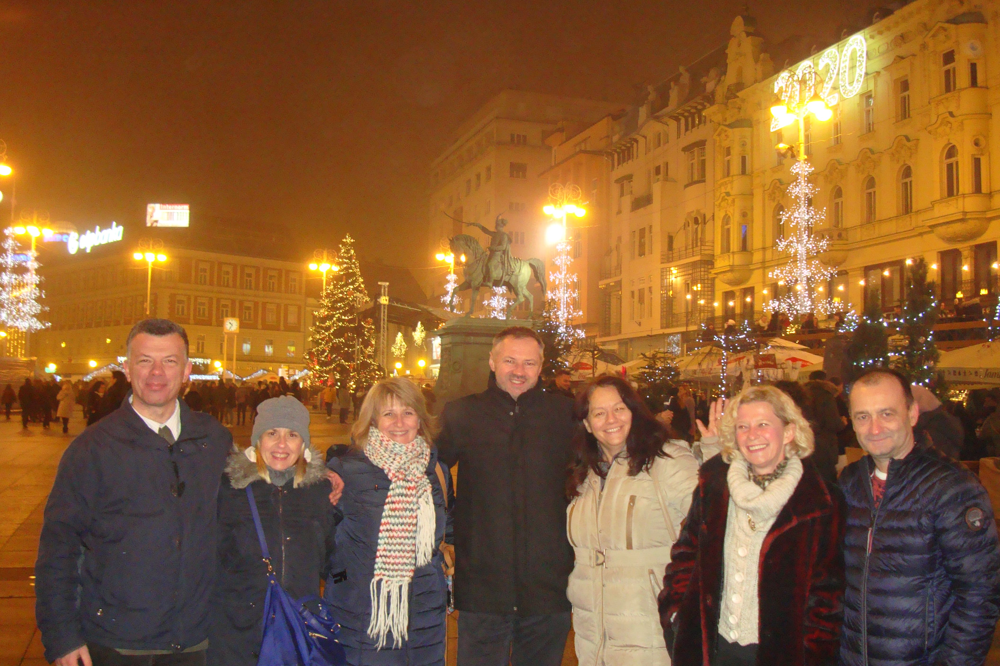 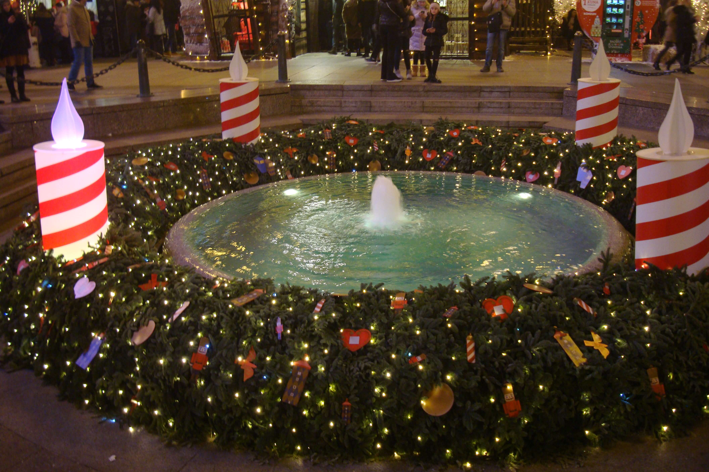 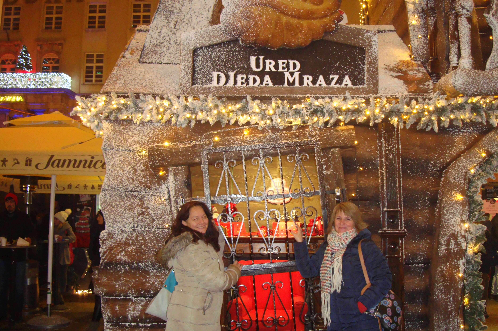 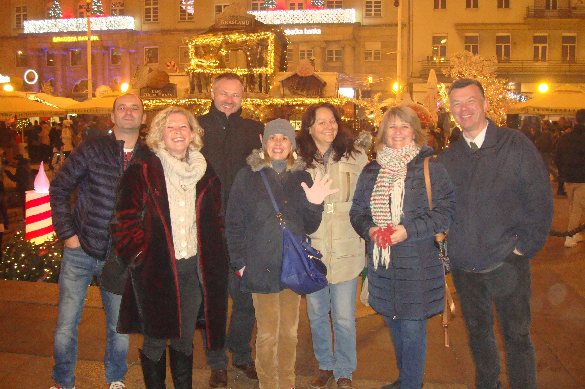Popili smo piće iznad klizališta. Mene podsetilo na Božić u Njujorku iz filmova. Lepo, veliko klizalište. Isto super atmosfera.
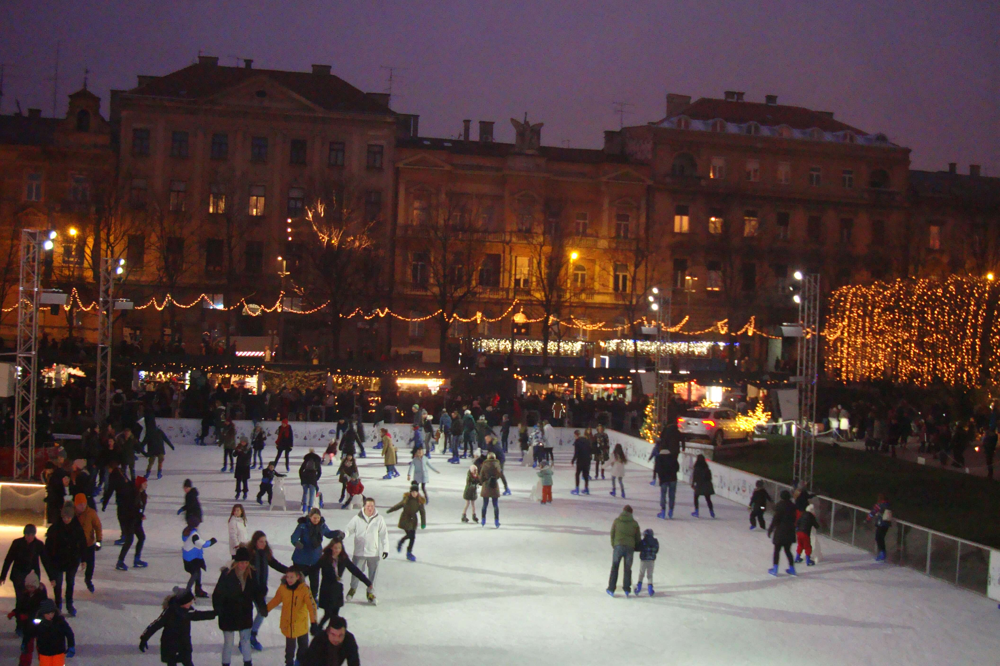Videle smo hotel "Palace". Luksuzan. Prvi hotel u Zagrebu. Naravno, informacija od Kreše vodiča.
Došle smo kući da se odmorimo i spremamo za žurku. Rok žurku. Doterale smo se. Jaca: a la kožni minić. Svjetlana: čizme preko kolena. Nela: haljinicu. Ja: čipkanu haljinu. Našminkala se ko klovn. Umazala se jarkim ružem oko usta. Spremne smo.
Srele smo se sa Anom i Sunčicom na trgu. Čule još neverovatnih priča sa ostrva Krapnja. Tačno smo poželele da odemo tamo.
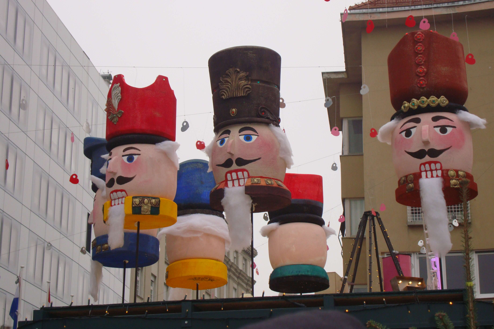Sto je burence ofarbano u Krcka Oraščića. Pojele smo štrukle sa borovnicom, orasima i sirom. Otišle na andergraund žurku gde prže rok. I naše je godište, mahom.
Bajkerski klub. Kao u američkim filmovima kad je klub negde u nedođiji. Svira lik sa dugom, retkom, sedom kosom, u crnom kožnom prsluku, golih ruku i sa sunčanim naočarima. Prže električne gitare. U dvorištu se dimi roštilj. Gosti ulaze sa roštiljem na papirnim tanjirima i debelo, neravno sečenim hlebom. Na zidu veliki TV. Ide filmić sa guzicama u tangama preko celog ekrana, koje se tresu na motorima.
Zadimljeno je. Hrvoje nas je dočekao. Došlo je i njegovo društvo.
Što bi Draganica rekla: "Kol'ko zuba!" Puno se smeju. Umeju baš dobro da igraju. Ko ima dugu kosu, mlati kosom. Ko nema kosu, mlati glavom. Nerealna atmosfera. Ja sam đuskala. Prijalo mi.
Jaci prišao jedan čudan lik. Sa još čudnijom pričom. Reće da zna kako se zove, odakle je i gde spava. Jasmina iz Novog Sada. Odakle zna, neka ostane tajna. Pri tom je bokser.
Zagreb, dan treći
Obišle još jedan krug. Kupovina suvenira. Opet smo jele kobasice debrecinke. Sada za doručak. Probale smo i germ knedlu. Slatko sa grizom.
Popile smo kafu i čaj u "Franku". Neli se ispunila želja da sretne Baltazara. Slikala se sa njim. Na putu do kola naišle smo na crkvu. Ušle smo malo da pogledamo, a ono: puna crkva, svi stoje i pevaju. Interesantan prizor. To još nisam doživela.
Napazarile se u "Decathlonu" i put pod noge...
Najveći utisak
na nas ostavio je Hrvoje. Puna su nam usta bila Hrvoja i hvale. On je skoro stalno bio sa nama. On, Krešo, Miro i Siniša su nas toliko vodali, objašnjavali, zasmejavali, da smo se osećale izuzetno dobrodošle, a podsetile se malo i na vreme kavaljera. Bez njih Zagreb ne bi bio to što sada jeste.
Bok, Zagreb, do sledećeg viđenja!